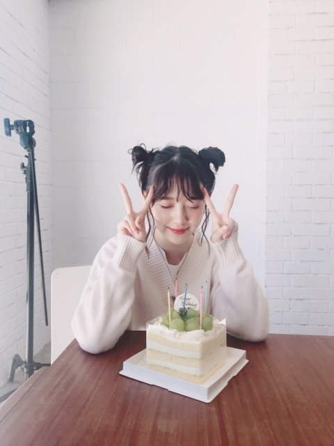
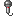
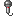

2018/1003Wed床が落ち着く。

最近は、毎日
ホットギミックの撮影をしています
妹の茜役の子とも仲良くなりました
本当の妹みたいに可愛くて
いつもハグしてます♡
撮影、引き続き頑張ります
何となくではありますが
自己紹介をしたいと思います
岐阜県出身 21歳 O型
出身地の岐阜は水や空気が綺麗で
君の名は。や聲の形や半分青い
の舞台にもなったり
自然たくさんで街並みも和な感じで
素敵な自慢の地元です
人や時間もまったり〜
O型だなぁと思うのは
蚊に刺されやすいところと
マイペース人間なところかな
母と姉はA型なのでA型っぽい部分も
あるらしいです
布団や洋服のシワ、時間や
リモコンの位置や家具のズレは気になる派です
好きな食べ物は里芋とひじき以外なら
何でも好きですが
特にお肉が大好きで1日1お肉は食べます
焼肉ではミノとセンマイ刺しとタンを！
餃子も大好物です
お寿司や海鮮も好きでハマグリとか
大アサリの浜焼きやウニ、カニなどが好きです
海まで行って食べ歩きもよくします
甘いものは苦手ですが
和菓子は食べれます
フルーツは特に桃とみかんが好き
◯◯狩りに行きたいのですが
なかなか行けてません...
性格を自己分析すると
マイペースで忘れっぽくて
負けず嫌いでポジティブ思考です
人を楽しませたり笑顔にすることが
好きです
口癖は
眠たい お腹すいた 忘れちゃったです
聞き間違いがひどいので
どうやら耳が遠いらしいです
何卒よろしくお願いします
趣味は映画鑑賞、美術館巡り、旅行、
お買い物、コスメ集めで
カメラも好きでたまに持ち歩いて
撮ったりしています
フィルム、チェキ、写ルンです、一眼を
使い分けています
全然上手くはないですが
忘れっぽい自分の記憶の一部となるし
瞬間の美しさを形に残して
大切にしたいと思っているので
自己満の趣味です
母をたくさん撮ってます
あとメンバー！
料理も趣味なのですが
最近は煮物のレパートリーを
増やしていきたいなと考えています
ドライカレー
ひき肉のあんかけ団子
かぼちゃの煮付け
豚肉の梅しそ巻き
が今のところ得意な料理たちかな...
食器集めは2年前からしていて
この間はarの連載で陶芸に挑戦して
湯のみとお皿を作りました！
オシャレな食器たくさん集めたいな
映画はお家でも観ますし
映画館でも観ます
ふらっと何となく観るのもあるし
絶対観ようと決めて観るのもあるし
特に調べたりもせず予備知識無しで
映画を観るのが好きです
人との出会いみたいに
一期一会なところにドキドキ。
乃木坂に入ってから、
そしてarのレギュラーモデルを
やらせていただくようになってから
より洋服やコスメが好きになって
時間があればファッションサイトを見たり
オシャレな人のコーディネートを見たり
ファッション雑誌を読んだりします
映画からヒントを得ることも
たくさんあります
最近好きなブランドさんは
ロザリームーン
FUR FUR
ハニーミーハニーです
ヨーロッパの女の子みたいな
白肌に個性的な洋服に赤リップ！
みたいなのがマイブームです
ヴィンテージの物も取り入れます
幼稚園からお抹茶やお茶が好きで
茶道をしていました
お茶が好きすぎる故に
いつかお茶漬け屋さんを
開きたいなと思っています
中学の頃は陸上部だったので走るのが
地味に得意です
ずっと好きな色は、白です！
その時々でブームな色は変わりますが
今はブルーと紫をよく身につけます
好きなタイプをよく聞かれるので...
包容力があって優しくて
中身が大人な人がいいです
一緒にいてまったりできるような
気を遣わない関係に憧れます
ホラー映画は大好きですが
心霊体験やおばけ屋敷、怖い話は
大の苦手です
ざっとこんな感じです！
何となくこのブログを見た方にも
何となく
知っていただけたら
嬉しいなー
早めにお仕事が終わった日に
お家でクルーレスっていう
映画を観ました

オシャレで可愛くてきゅんきゅん
この映画を見てから
黄色のチェックシャツが可愛くて
今気になってます
まだまだ観たい映画が溜まっていて...
猟奇的な彼女
きみに読む物語
ガールボス
イヴ・サンローラン
シスターズ
サイテーハイスクール
ビッグフィッシュ
いつ見れるかなぁ
よく握手会で聞かれるので
わたしが今まで観た中で
特に印象に残っている映画を
カテゴリ別にしておススメしてみますと、、
癒されたいとき
・魔女の宅急便
・ヘイフラワーとキルトシュー
・ビバリーヒルズチワワ
泣きたいとき
・ぼくは明日昨日のきみとデートする
・湯を沸かすほどの熱い愛
・タイヨウのうた
オシャレしたいとき
・アメリ
・プラダを着た悪魔
・お買い物中毒な私
ハラハラしたいとき
・テキサスチェーンソー
・プレデターシリーズ(1のシュワちゃんを是非)
・バイオハザードシリーズ
世界観に浸りたいとき
・渇き。
・ルーム
・かもめ食堂
きゅんきゅんしたいとき
・シンデレラストーリー
・溺れるナイフ
・陽だまりの彼女
です
観てみてください！
もちろん
ホットギミック も
是非観ていただきたいです
そして22枚目シングル
今回も選抜に選んでいただきました
ありがとうございます！
1列目2列目3列目アンダーと
今までに色んな位置を
経験させていただきました
今回は、この2列目のポジションで
自分なりに輝けるよう
全力を尽くします
諦めは私の中で負けたことになるので
今のこの素直な気持ちを忘れずに、
応援して下さる皆さんの笑顔を見る為にも、
まだまだ頑張りたいと思います
センターの七瀬さん
そしてポジションが隣の若月さん
二人が今年卒業されます
色んなメンバーの旅立ちがあります
正直めちゃくちゃ寂しいです、今はまだ。
でも大好きなメンバーだからこそ
悩みに悩んで決心した新たな道を
応援できたらいいな...と思います
みんな、まだ旅の途中。
その旅の一部分に乃木坂46があって
この時代この場所で七瀬さん、若月さんに
出会えたことが本当に嬉しい
後輩思いで真面目な若さん
自分の個性を大切にし続けた七瀬さん
アイドルとしても人としても
お二人を近くで見てきて、
たくさんの事を学び、知りました
私も頑張らなくちゃ！
バトンちゃんと繋げます
そして楓、りりあ初選抜おめでとう〜
一緒に楽しもうね☺︎
楓とは手羽先の約束 りりあとはディズニーの
約束してるから早く果たせますように
2018年も残り3カ月、
色んな形に変わりゆく日々ですが
そんな不安定さが
より、今を生きている証であり
時代の証になっています
乃木坂46をこれからも変わらず
よろしくお願いしますm(._.)m

ちょっぴり早めですが
arの皆さんに22歳を祝っていただきました！
ポジティブに、
君らしく、
私らしく、！
長くなってごめんなさい、
では☺︎
2018/10/03 20:48
コメント(650)
堀ちゃんおはよう！
こうして改めて自己紹介されると、
意外と知らないこともあるもんだなーと
思ったりするよね！
え？堀ちゃん、岐阜出身なのか！…とか←
…
レコメンお疲れ様でした！
映画で毎日朝が早いんじゃないかな？
年末へ向けて忙しくなるから、
くれぐれも体調に気をつけてね！
こうして改めて自己紹介されると、
意外と知らないこともあるもんだなーと
思ったりするよね！
え？堀ちゃん、岐阜出身なのか！…とか←
…
レコメンお疲れ様でした！
映画で毎日朝が早いんじゃないかな？
年末へ向けて忙しくなるから、
くれぐれも体調に気をつけてね！
わたしもO型で、蚊に刺されやすいしマイペースだし、あとお化け屋敷苦手で、、似てるところたくさんあって嬉しいです。あと選抜おめでとうございます！テレビによく映る位置だと思って嬉しいです☺︎頑張って下さい！
映画楽しみにしてます
おばけ屋敷怖いですよね
おばけ屋敷怖いですよね
未央奈さんおはようございます。
今更ながらの自己紹介ありがとうございます^_^
僕が乃木坂を何となく応援しだして3年弱
今更未央奈さんの事が詳細に分かりました。
ただのゾンビ好きじゃなかったのですね笑笑
去年のでしたかね？バースデーの後のブログで、
皆さんのコメントを読んでおかしい位泣きました。
とあって、
それを読んだ僕は
特に未央奈さんを推してはいないし
コメントも寄せてないのにとても感動しました。
未央奈さんの率直な想いが伝わってきて
あー、この子は見た目通りほんとに良い子なんだなぁ！
と思いました。
コレからもなんとなーく注目させていただきます^_^
頑張って下さい。
今更ながらの自己紹介ありがとうございます^_^
僕が乃木坂を何となく応援しだして3年弱
今更未央奈さんの事が詳細に分かりました。
ただのゾンビ好きじゃなかったのですね笑笑
去年のでしたかね？バースデーの後のブログで、
皆さんのコメントを読んでおかしい位泣きました。
とあって、
それを読んだ僕は
特に未央奈さんを推してはいないし
コメントも寄せてないのにとても感動しました。
未央奈さんの率直な想いが伝わってきて
あー、この子は見た目通りほんとに良い子なんだなぁ！
と思いました。
コレからもなんとなーく注目させていただきます^_^
頑張って下さい。
ありがとう（ございます）。
クルーレス、検索して、黄色のチェックシャツ見て、知りました！IggyAzaleaの「Fancy」のMVは、この映画へのオマージュだったんですね！ありがとうございます。まだ4年前っていうことにも、いや、それくらいかぁ。CharliXCXも衝撃的だったなぁ。
長くなりました、すみません。
クルーレス、検索して、黄色のチェックシャツ見て、知りました！IggyAzaleaの「Fancy」のMVは、この映画へのオマージュだったんですね！ありがとうございます。まだ4年前っていうことにも、いや、それくらいかぁ。CharliXCXも衝撃的だったなぁ。
長くなりました、すみません。
君に読む物語はほんとにいい！
ミスチルの桜井さんも好きっていってたよー
ミスチルの桜井さんも好きっていってたよー
未央奈ちゃん
どこにいてもちゃんと見てますよ！
応援してます！！
どこにいてもちゃんと見てますよ！
応援してます！！
今回のブログ堀ちゃんのこと良くわかって楽しかったです！
映画の撮影も応援してます！
映画の撮影も応援してます！
お疲れ様です!
未央奈
選抜おめでとう
これからも頑張ってください
誕生日ももう少しだね
早く握手会でおめでとう言いたいよ
またコメントするね
SONYでした
最近風邪を引いて辛い
選抜おめでとう
これからも頑張ってください
誕生日ももう少しだね
早く握手会でおめでとう言いたいよ
またコメントするね
SONYでした
最近風邪を引いて辛い
みおな氏可愛い〜
あと 渇き。いいね！
あと 渇き。いいね！
みおなブログ更新ありがとう。
自己紹介、性格、映画知れてよかった
自己紹介、性格、映画知れてよかった
かわいい➰
ブログの写真可愛すぎたわ！
応援してます！
応援してます！
ブログ更新ありがとうございます
なぁちゃんや若様が卒業発表してコメントしてくれて
嬉しいです2列目になったけどどのポジションでも
輝いてください応援していますこれからも頑張ってください
なぁちゃんや若様が卒業発表してコメントしてくれて
嬉しいです2列目になったけどどのポジションでも
輝いてください応援していますこれからも頑張ってください
間違えなく次世代をのエースを担う1人だと思ってます！
僕たちも寂しいですけど卒業するメンバーを応援したいし、新しい乃木坂ちゃんを見ることができるのを楽しみにしてます！！
僕たちも寂しいですけど卒業するメンバーを応援したいし、新しい乃木坂ちゃんを見ることができるのを楽しみにしてます！！
全部しっかり読んだよ！
堀ちゃんのこと応援してます！
堀ちゃんのこと応援してます！
堀さんのことが大好きです。
(。 ･ิω･ิ)ども、出会いと別れを大切に繰り返すリフレインもーりーです
初？コメントかもです
なんか自己紹介とゆう独特なものをあげてたのと
あと見たい映画に『君に読む物語』が入ってたのでコメントしようかと思って
みさちゃん推しのもーりーなんですが
そのみさちゃんがめちゃくちゃ勧めてきたのがこの
『君に読む物語』
泣けるよおぉぉぉぉぉぉお！！
見たいとゆうことはあらすじも知ってると思うけど、本当に良い映画でした
こちらは最優先でどうかお願いします(笑)
みさちゃんにも感想を3ループに渡ってして、盛り上がりました
みさちゃん推しですが乃木坂が大好きなのでみんな応援してます
未央奈の感性も好きですよ(笑)
いつも何かしら楽しませてくれる未央奈をこれからも応援します
٩(◦`꒳´◦)۶
未央奈ちゃん、おはよう。
ブログ更新ありがとう。
自己紹介ありがとう、知らないこともあったから嬉しい。
思いが詰まったブログだね。未央奈ちゃんがどのポジションでも応援することに変わりありません。
映画の撮影頑張ってくださいね、あっ、言われなくても頑張ってるよね。
乃木坂46と頑張ってるcuteでsmartな未央奈ちゃんを応援しています。
ブログ更新ありがとう。
自己紹介ありがとう、知らないこともあったから嬉しい。
思いが詰まったブログだね。未央奈ちゃんがどのポジションでも応援することに変わりありません。
映画の撮影頑張ってくださいね、あっ、言われなくても頑張ってるよね。
乃木坂46と頑張ってるcuteでsmartな未央奈ちゃんを応援しています。
タイヨウのうた、映画もドラマも好き！
これからも応援しています☺︎
ブログありがとー
俺も今挑戦する時期だから頑張らないと(ง •̀_•́)ง
ちょっと早いけどお誕生日おめでとう！
22歳もいい年になりますように！
俺も今挑戦する時期だから頑張らないと(ง •̀_•́)ง
ちょっと早いけどお誕生日おめでとう！
22歳もいい年になりますように！
未央奈ちゃんこんばんは！ありがとうございます！これからも乃木坂46、応援します。ありがとうございます‼
未央奈さん、こんにちは。
いつも、応援してます。
ブログ見ました。22枚目。2列目のポジション。
諦める時じゃないよね。
センターからアンダーまですべてのポジションを経験してきた、一期生の先輩と共に活動し、成長してきた未央奈さん。
西野さんや、一期生の卒業が続く中、次世代として引っ張って行けるのは未央奈さんしかいません。
これからもっと輝いてほしいです。
映画主演おめでとう！頑張って。
いつも、応援してます。
ブログ見ました。22枚目。2列目のポジション。
諦める時じゃないよね。
センターからアンダーまですべてのポジションを経験してきた、一期生の先輩と共に活動し、成長してきた未央奈さん。
西野さんや、一期生の卒業が続く中、次世代として引っ張って行けるのは未央奈さんしかいません。
これからもっと輝いてほしいです。
映画主演おめでとう！頑張って。
未央奈！
自己紹介ありがとう(*^^*)
改めて未央奈を知れたよ！！
もうすぐ誕生日だね！
お祝いするね～❤️
自己紹介ありがとう(*^^*)
改めて未央奈を知れたよ！！
もうすぐ誕生日だね！
お祝いするね～❤️
これならみおながわかる

みおちゃん、ブログありがとう
めっちゃ、アピールするやん‥(笑)
大丈夫
みおちゃんは、いつでもセンターに入れる力を、持っています
焦らず、マイペースで
映画、観に行きます
めっちゃ、アピールするやん‥(笑)
大丈夫
みおちゃんは、いつでもセンターに入れる力を、持っています
焦らず、マイペースで
映画、観に行きます
こんにちは〜(*・∀・)ノ
未央奈ちゃん
お返事遅くなってごめんね(笑)
内容しっかり読ませて貰ったよ！
いままで未央奈の事を応援してて、
今現在の心境やこれからの事も聞けたし僕の知らない事が沢山あったよ
今日はいろんな事も知れて、少し嬉しかったです☺️未央奈ありがとう✨
話し変わって！
なぁーちゃんとゆみちゃん卒業するんですね〜
最初に知ったときは少し言葉が出なかった...
寂しくて辛かったです(´Д⊂ヽ
でも、卒業したからといってこれで
終わりじゃないよね。
ここからがスタートだと思う。
メンバーみんなでずっとなぁーちゃんとゆみちゃんの事これからもずっと
応援して行こうね〜
残りの時間を大切にし
思い出を沢山作ってください。
未央奈にとっても乃木坂46メンバーみんなにも、なぁーちゃんとゆみちゃんは大切な宝物だね
これから、なぁーちゃんやゆみちゃんのような存在になってもらいたいし、なれると思います✨
未央奈ならきっと❤️
そして、でんちゃん、りりあん、
初選抜おめでとう(*’ω’ノノ゛☆パチパチ
二人とも不安だと思うので
いろんな所でサポートしてあげてね。
ほんと乃木坂46メンバーの相次ぐ卒業は凄く寂しいけど、このまま坂道を登って行きましょうね。
ずっと応援してます✨
映画のお芝居、大変だろうけど、
体調に気をつけて頑張ってください。
ここ最近肌寒いので風邪にも気をつけてね。
ポジティブに
君らしく
ほんと未央奈らしくね！
頑張ってください。
写真ありがとう❤️
未央奈ちゃん
お返事遅くなってごめんね(笑)
内容しっかり読ませて貰ったよ！
いままで未央奈の事を応援してて、
今現在の心境やこれからの事も聞けたし僕の知らない事が沢山あったよ
今日はいろんな事も知れて、少し嬉しかったです☺️未央奈ありがとう✨
話し変わって！
なぁーちゃんとゆみちゃん卒業するんですね〜
最初に知ったときは少し言葉が出なかった...
寂しくて辛かったです(´Д⊂ヽ
でも、卒業したからといってこれで
終わりじゃないよね。
ここからがスタートだと思う。
メンバーみんなでずっとなぁーちゃんとゆみちゃんの事これからもずっと
応援して行こうね〜
残りの時間を大切にし
思い出を沢山作ってください。
未央奈にとっても乃木坂46メンバーみんなにも、なぁーちゃんとゆみちゃんは大切な宝物だね
これから、なぁーちゃんやゆみちゃんのような存在になってもらいたいし、なれると思います✨
未央奈ならきっと❤️
そして、でんちゃん、りりあん、
初選抜おめでとう(*’ω’ノノ゛☆パチパチ
二人とも不安だと思うので
いろんな所でサポートしてあげてね。
ほんと乃木坂46メンバーの相次ぐ卒業は凄く寂しいけど、このまま坂道を登って行きましょうね。
ずっと応援してます✨
映画のお芝居、大変だろうけど、
体調に気をつけて頑張ってください。
ここ最近肌寒いので風邪にも気をつけてね。
ポジティブに
君らしく
ほんと未央奈らしくね！
頑張ってください。
写真ありがとう❤️
少し早いけど誕生日おめでとう
10/15でしょ！
まだ、背中骨折中で仕事が出来ない
堀ちゃんから、頑張れーのメッセージ
貰えたら早く治るかも？
堀ちゃん里芋嫌いって、昔から自分も
嫌いなんだ
トマトもあまり好きでない
テレビで見ると自分も頑張らねばと
勇気をもらってる
レコメン聴いてるよ〜ポンポン大好き
毎週水曜日楽しみにしてるんだ
何気ないはなしだけど
いつまでも応援してるよ
では、またねー
10/15でしょ！
まだ、背中骨折中で仕事が出来ない
堀ちゃんから、頑張れーのメッセージ
貰えたら早く治るかも？
堀ちゃん里芋嫌いって、昔から自分も
嫌いなんだ
トマトもあまり好きでない
テレビで見ると自分も頑張らねばと
勇気をもらってる
レコメン聴いてるよ〜ポンポン大好き
毎週水曜日楽しみにしてるんだ
何気ないはなしだけど
いつまでも応援してるよ
では、またねー
堀さん、こんにちは。
これは私が初めてあなたのブログでコメントしています。
あなたは私にたくさんの喜びと動力を持ってきました
とても感謝します
ずっと応援しています
頑張ってくださいね
これは私が初めてあなたのブログでコメントしています。
あなたは私にたくさんの喜びと動力を持ってきました
とても感謝します
ずっと応援しています
頑張ってくださいね
みおちゃん こんにちは！
ブログ更新ありがとう＼(^o^)／
改めての自己紹介見てると知らなかった事が
いっぱいあるなぁ～って新しい発見があって
面白かったよ！
もうすぐ誕生日だね
お祝いしてもらって良かったね
映画の撮影大変だと思うけど
体調に気を付けて楽しんで頑張ってね
ブログ更新ありがとう＼(^o^)／
改めての自己紹介見てると知らなかった事が
いっぱいあるなぁ～って新しい発見があって
面白かったよ！
もうすぐ誕生日だね
お祝いしてもらって良かったね
映画の撮影大変だと思うけど
体調に気を付けて楽しんで頑張ってね
未央奈♪こんにちは～(o^∀^o)ノ
いままで以上に『堀 未央奈』って
人物像を..分かりやすく丁寧に
知れたのが良かったです。
本当に自己紹介ありがとうね❤️
ここ最近乃木坂46の話題がたくさんあって
嬉しいですよ☺️
多くのメンバーが多方面で活躍をしてるよね
坂道合同舞台ザンビや
絢音ちゃんと琴子の舞台けものふれんずや
純奈の舞台や
未央奈の映画ホットギミックもあって
これから楽しく思います(o^∀^o)
他にもいろいろあるので、楽しみにしてます
その一方で...
なぁちゃんとゆみちゃんの卒業は寂しいし
悲しいし辛いです(>_<)
未央奈には二人の魂を引き継いで貰いたいし
なれると思います✨✨
サヨナラに強くなれだね☺️
君らしく
未央奈らしくだね！
大丈夫！大丈夫！大丈夫！
映画の撮影頑張ってください。
公開を楽しみにしてます
 ✨✨
✨✨
いつも写真ありがとう
未央奈大好き(*/∀＼*)
いままで以上に『堀 未央奈』って
人物像を..分かりやすく丁寧に
知れたのが良かったです。
本当に自己紹介ありがとうね❤️
ここ最近乃木坂46の話題がたくさんあって
嬉しいですよ☺️
多くのメンバーが多方面で活躍をしてるよね
坂道合同舞台ザンビや
絢音ちゃんと琴子の舞台けものふれんずや
純奈の舞台や
未央奈の映画ホットギミックもあって
これから楽しく思います(o^∀^o)
他にもいろいろあるので、楽しみにしてます
その一方で...
なぁちゃんとゆみちゃんの卒業は寂しいし
悲しいし辛いです(>_<)
未央奈には二人の魂を引き継いで貰いたいし
なれると思います✨✨
サヨナラに強くなれだね☺️
君らしく
未央奈らしくだね！
大丈夫！大丈夫！大丈夫！
映画の撮影頑張ってください。
公開を楽しみにしてます
いつも写真ありがとう
未央奈大好き(*/∀＼*)
ブログ更新してくれてありがと～！
自己紹介、知ってるつもりだったけれど、知らなかった未央奈を知ることが出来て嬉しかったです( '༥' )
ホットギミック、私も今から楽しみです！連日撮影で大変だと思うけど、頑張ってね～！o(^-^)
試写会、当たるように頑張ります笑
自己紹介、知ってるつもりだったけれど、知らなかった未央奈を知ることが出来て嬉しかったです( '༥' )
ホットギミック、私も今から楽しみです！連日撮影で大変だと思うけど、頑張ってね～！o(^-^)
試写会、当たるように頑張ります笑
まずはレコメンお疲れ様でした
のりほりコンビについても皆さんに
知って欲しかったなあ
けど改めて自己紹介
してくれてありがと(´･ω･｀*)
堀ちゃんがセンターに選ばれた時からすると
二人が卒業するなんて考えられなかったなあ
記念の22枚目沢山想いで作ってね
のりほりコンビについても皆さんに
知って欲しかったなあ
けど改めて自己紹介
してくれてありがと(´･ω･｀*)
堀ちゃんがセンターに選ばれた時からすると
二人が卒業するなんて考えられなかったなあ
記念の22枚目沢山想いで作ってね
未央奈が宇宙1可愛いよ！
未央奈ちゃん頑張ってね！
レコメン毎週聴いています。
２２枚目シングルも勿論応援します。
上野のフェルメール展にも勿論行きます。
２２枚目シングルも勿論応援します。
上野のフェルメール展にも勿論行きます。
みおなちゃんすてきな自己紹介だね！撮影がんばってね。
乃木坂が好きなので、誰かが卒業してしまうと僕も寂しいです。
それでも応援し続けるので、堀ちゃん！頑張って下さい。
今回の22枚目シングル選抜おめでとうございます
初選抜された３期生の力になって、今回のシングルも良いものにして下さい。
それでも応援し続けるので、堀ちゃん！頑張って下さい。
今回の22枚目シングル選抜おめでとうございます
初選抜された３期生の力になって、今回のシングルも良いものにして下さい。
映画の撮影ふぁいと！
みおな☆★タンポポだけども～☆★☆
(///∇///)
ほんっまに！ 可愛いなあ～♪♪♪
映画の主演 そりゃやる器やわあ♪
スタイルも抜群すぎるし♪
性格も楽しいし守りたくなるし♪
おまけに 超絶美形やからなあ♪♪
ほんま、べた惚れやわあ！！！
あんなあ、みおなの観たい映画で
『君に読む物語』と『ビッグフィッシュ』は
オススメやよ～♪♪♪
ほんならみおなが教えてくれた
映画も観るわ！！！
大好きやで！！！
みおなはタンポポの人生のキキだよ！！タンポポはジジだよ♪♪
(σ≧▽≦)σまたなータンポポより！
タイヨウのうた
激しく同意。
激しく同意。
未央奈、今日も一日お疲れさまでした。
「ホットギミック」の撮影、楽しくできていて安心です。毎日撮影があるなかで、自分が学んできたことを発揮したり、それ以上に学ぶことがたくさんあったり。とても良い日々を送れているのかなーと思ってます。映画のお話しはまた後日。良き時にお話しが聞けることをのんびり待ってますね。
未央奈の自己紹介。改めて見直してみました。
もう5回も見直しちゃいました笑
未央奈と言えば、ご飯ですね。作るよりも食べる専門っていうイメージは昔からあるし、本当に美味しそうに食べるから見てるこっちも嬉しくなります。
それと個人の感想なのですが、なんかそんな気がしました。「あっ、今お腹すいてるんや」ってわかりやすいです笑
お肉好きなのわかります。僕も大好きです。
以前、職場の先輩に連れて行ってもらった「すき焼き専門店」が本当に美味しくて、未央奈にもぜひとも行ってもらいたいなーと思ってて。本当にいくらでも食べられるくらい美味しかったお店でした。
ファッションは、未央奈なりのこだわりがあって、楽しんでいるなと思うのですが、個人的には、未央奈の秋冬のファッションが好きです。「可愛い」にも様々ありますが、落ち着いた可愛さや、そのような印象のある着こなしが好きだなと思っちゃいます。。。
先日の仙台の握手会で着ていたニットや、これからはタートルネックなんかも着ていくのかなと思ったり。これから長い期間、未央奈のファッションをいろいろ見るのが楽しみです。
映画好きなのも個性の一つで、なんかすっかりその印象が定着してきました。未央奈が映画好きだから、僕も映画好きになったってところあります。映画館に行って観ることもなかったのに、今年に入ってから映画館に行くようになって。
「あっ、この映画オススメしたいな」って、考えたりもして、楽しいです。
未央奈が観る映画、オススメする映画を遡ってみて、共通してるのは「家族」をテーマにした作品なんじゃないかなと思いました。
この前オススメしてくれた「星ガ丘ワンダーランド」、ここでも書いてくれた「湯を沸かすほどの熱い愛」過去のブログで話していた「ミスミソウ」「万引き家族」「三度目の殺人」などなど。少し重めの内容だったりもしますが、家族が好きなんだなと。
かつ「母親」がメインとなった作品が好きなのかなと思いました。未央奈のお母さん好きが、ここにも現れているのかなとも思いました。
僕から未央奈にオススメしたい映画をいくつか。
家族をテーマにした作品
「犬猿」
「ツナグ」
「歩いても 歩いても」
温かい人間ドラマを観たい時
「あん」
「ペコロスの母に会いに行く」
「アヒルと鴨のコインロッカー」
一つ、衝撃を与える作品
「64 ロクヨン」
「愚行録」
「淵に立つ」
今、挙げられるのはこれくらいです。。。
お時間ある時に、ぜひ観てみてくださいm(_ _)m
22枚目の選抜入り、おめでとうございます。
またこうしていられることが、嬉しい限りです。
今回与えられたポジションで、やれることはきっとあります。未央奈なりに頑張っていく姿を、応援していきますね。改めまして、これからもよろしくお願いしますm(_ _)m
じゃあ、最後に。
体調管理にはくれぐれも気をつけて。
「ホットギミック」の撮影、普段のお仕事。
頑張ってくださいね。応援しておりますm(_ _)m
ではでは、ねこでした。
映画の主演とか色々あるけど、頑張って！
応援してます
応援してます
未央奈 こんにちは！
懐かしい タイトルがあるね。
「猟奇的な彼女」
面白いよ。感動しちゃいます。
でも、絶対絶対に
「僕の彼女を紹介します」
も見て！
ちゃんとした理由があるよ！
あー早く「ホットギミック」 公開されないかな？
22nd
いろいろな想いがあるけど、楽しみにしてますよ！
どのポジションでもね！
PVも楽しみ！
そうだよね！
今が、ゴールでなく旅の途中。
悲しんで止まるでなく、
悲しいからこそ前にだね。
タイヨウのうた 見ようっと。
未央奈は未央奈のままで、
最高の笑顔を！
懐かしい タイトルがあるね。
「猟奇的な彼女」
面白いよ。感動しちゃいます。
でも、絶対絶対に
「僕の彼女を紹介します」
も見て！
ちゃんとした理由があるよ！
あー早く「ホットギミック」 公開されないかな？
22nd
いろいろな想いがあるけど、楽しみにしてますよ！
どのポジションでもね！
PVも楽しみ！
そうだよね！
今が、ゴールでなく旅の途中。
悲しんで止まるでなく、
悲しいからこそ前にだね。
タイヨウのうた 見ようっと。
未央奈は未央奈のままで、
最高の笑顔を！
映画楽しみ〜！
撮影大変だけど頑張ってね！
撮影大変だけど頑張ってね！
こんにちわん。
レコメンお疲れ様。
シュワちゃんのジングル・オール・ザ・ウェイを見たことは？
この映画結構好き。
床に寝転がってたい気分…。
レコメンお疲れ様。
シュワちゃんのジングル・オール・ザ・ウェイを見たことは？
この映画結構好き。
床に寝転がってたい気分…。
ちょうど仕事のストレスで癒されたかったから映画見てみるね！


頑張ってください。
映画も楽しみにしてます！！！
みおなちゃん大好き！！！